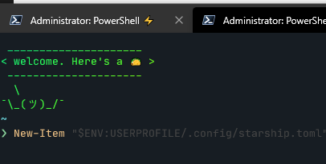
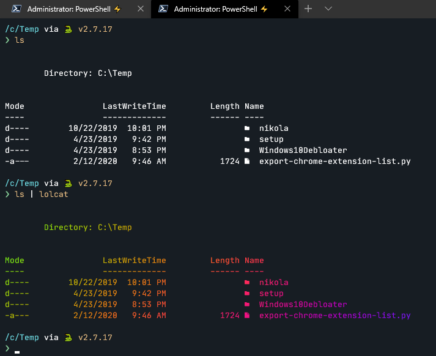

2020-05-17T16:32:48+00:00
Digging the guitar tone in this. Need to break out my Line6 Helix now. 🎸
{{< youtube PanHXyARGlM >}}
Digging the guitar tone in this. Need to break out my Line6 Helix now. 🎸
{{< youtube PanHXyARGlM >}}
✔ Animated a fuzzy tickle creature.
✔ Rescue a bird stuck in a vent
✔ Begin DevOps yaking shaving session
Jedi: Fallen Order has the most linear gameplay I've done in a while. View map, get object, run for 15 mins to get back to beginning of map. Rinse and repeat. Feels like I'm back to Skyrim and endless walking. I think Dying Light ruined me with it's parkour and movement dynamics that made everything feel so immersive.
GitHub Codespaces was announced today. I've been a believer in this for a while now, and have been on the early access testing of online.visualstudio.com. Apparently it's renamed to Visual Studio Codespaces now, and is the same tech. Will be a while before this trickles out to be mainstream, but as an early adopter of "developer workspaces as code" it's an exciting time.
The fact that I can now spin up with a couple text files a full development test environment, with SQL Server in Docker, a configured development environment with linting and more, and then rebuild this in a few minutes on any machine is pretty incredible.
Kept getting an error Incorrect syntax near the keyword 'read' when running the some updated PowerShell 7 in lambda with the dotnet3.1 sdk. Was troubleshooting loading types thinking I was having path issues.
Turns out one of these things is not like the other. 🤣
I think this explains why "error during "read". Maybe I should have run in my Azure Data Studio session before trying serverless 😀
If you want to simplify keeping up with github releases instead of using email, try the GitHub slack app. Simple create a releases channel and then run these two steps:
/github subscribe terraform-providers/terraform-provider-terraform/github unsubscribe terraform-providers/terraform-provider-terraform issues, deployments, statuses, public, commits,pullsThis should result in a final message saying:
This channel will get notifications from terraform-providers/terraform-provider-terraform for:
releases
Why not use /github subscribe terraform-providers/terraform-provider-terraform releases? I've found that at least on mobile this fails to filter properly. For me, it ignored many filters. By doing it in two steps it worked every-time without issues.
This means you'll now get a nice formatted slack notification of just a release, without all the extra noise of pull requests, issues, commits and more. Easy way to keep up to date with projects if you want to keep it in slack. The other way is to use the github notifications section, but personally I like the slack approach.
Finally got atomic algolia to work in CICD for my hugo blog. I've tried tackling this in many ways over time, but this finally just worked with plug and play ease thanks to just adding a line to the hugo build netlify.toml file.
If you want to try this out, assuming you've already got an algolia index, json file generated and all... then just:
You should get the following output from your netlify build if everything went right. No hits to algolia if you didn't change your indexes! 🎉
3:13:47 PM: > sheldonhull.hugo@1.0.0 algolia /opt/build/repo
3:13:47 PM: > atomic-algolia
3:13:47 PM: [Algolia] Adding 0 hits to sheldonhull.com
3:13:47 PM: [Algolia] Updating 0 hits to sheldonhull.com
3:13:47 PM: [Algolia] Removing 0 hits from sheldonhull.com
3:13:47 PM: [Algolia] 156 hits unchanged in sheldonhull.com
Got some use out of the new beta plugins for netlify.
I added a link checker task and it ran over 2000 internal tests to ensure all internal resources such as images, internal links, and even css assests all correctly were found. 🧹
That's a great idea for static sites. Incremental maintenance always is better than trying to catch up after years of no upkeep.
Requirements in a constant state of change set you up for failure.
Failure to work through requirements before starting can also increase the risk of failure.
Planning with defined acceptance criteria of work you are committing to is not about filling in more documentation and work that no one cares about. Properly defining the acceptance criteria for yourself is about the exploratory process that defines and limits the scope of the work to deliver the minimum viable product. This allows continued momentum and delivery of value to the business.
Without effective acceptance criteria, you are setting yourself up for more work, and thus likely to deliver value to the business as quickly. From my perspective, if you cannot truly define the acceptance criteria for work, then it's likely the effort will result in less value, be difficult to deliver, or end up with scope creep.
This is a critical thing to communicate to any teams struggling with reactive work. Without spending time ensuring proactive planning and defining the requirement and acceptance criteria, more time is often spent reworking and solving problems that might have been better handled with a little planning and forethought.
A classic example of unclear acceptance criteria and the wasteful impact of work is from a youtube clip here.
{{< youtube BTTdHW8Z668 >}}
How many times have you started work on a project and found yourself in a similar situation?
"There are many reasons why software projects go wrong. A very common reason is that different people in the organization or on the team have very different understandings of how the software should behave, and what problems it’s trying to solve. Ignorance is the single greatest impediment to throughput" Teams that deliberately seek to discover what they are ignorant about before development starts are more productive because there is less rework. The most effective way to do this is through conversation and collaboration between key stakeholders... Dan North
Now that I did my high-level philosophizing ... let's do something more low level and fun.
If we want to apply the "software engineer solving operational problems" approach to a very simple task, we could take the example of deploying a logging agent.
A software engineer expects a healthy culture to include tests for any code they write. This ensures better quality, more rapid velocity in changes, and other benefits that TDD advocates can tell you in other places.
For our example, let's say we are deploying a monitoring agent on some servers.
Gherkin is the syntax used to describe the tests.
{{< admonition type="info" title="Pester Syntax" >}} You can write Pester tests with PowerShell in a different format, but I'm going to use Gherkin here because of its sentences and far less of a confusing DSL for our example. {{< /admonition >}}
My understanding would be to compare Cucumber "spoken word", and Gherkin as the "language" chosen to communicate. When you write the feature files to work with Cucumber, you write them in Gherkin. Gherkin is supported for automated testing in many scripting languages. In a Windows environment, for example, you can use it to check many things like services running, connectivity with a server, installation of an app, and more using invocation via Pester.
Most examples I've found on Cucumber are focused very much on user testing, like website clicks, saving things, and other very narrow development focused actions.
What I've failed to see as much of is the discussion on the value of using this approach with teams implementing "Infrastructure as Code", operations teams, and other non-application specific roles.
In my example, let's start small and say you just have PowerShell, and some servers.
What I've discovered is that to actual validate DevOps oriented work is completed, you typically go through the equivalent of what a Cucumber test would have. This "checklist" of validations is often manually performed, lacking consistency and the ability to scale or repeat with minimal effort.
Consider an alternative approach to helping solve this issue, and expanding your ability to automate the tedious testing and validation of changes made.
Instead of using manual checks to validate a series of steps, let's see what a Cucumber oriented test might define as the acceptance criteria to confirm successfully finished, and how this might work with automating the tests.
This is a simple MSI with some command-line arguments that might be required. You want to validate the chocolatey package you deploy with correctly parsed the arguments passed in, and then successfully registered with the logging services.
An example feature file with Gherkin might look like this:
@class
Feature: I can generate configuration files for FancyLoggingVendor collection dynamically
Background: The test environment
Given the test environment is setup
Scenario: Source json is configured to collect windows event logs
Given FancyLoggingVendor json object is initialized
When the package parameters request a Windows Event
Then the created json file contents match
"""
{
"api.version":"v1",
"sources":\[
{
"sourceType":"LocalWindowsEventLog",
"name":"GherkinTest",
"renderMessages":true,
"cutoffRelativeTime":"-1h",
"hostname":"gherkintest",
"logNames":\[
"Security",
"Application"
\]
}
\]
}
"""
Another one that shows Scenario Outlines. This adds more functionality to looping through various variations of test cases.
Feature: I can install FancyLoggingVendor on my machine
Background: The local package is updated and the functions loaded
Given the test environment is setup
Scenario Outline: As a local user, I can install FancyLoggingVendor and configure capture my desired target
Given this package is not installed
When the package source is a local nupkg file
And a <Description> is provided with the values: <Paths>
Then I can install from this source
And the sources json returns sources of: <ExpectedSourcesCount>
And the application should show up in installed programs
And the service should show up
And the service should be running
Examples: Source Variations
| Description | Paths | ExpectedSourcesCount |
| Single_File | C:\\temp\\taco.log | 1 |
| Single_File_with_Filters | C:\\temp\\_.log | 1 |
| SingleFolder | C:\\temp\\foobar | 1 |
| MultipleFolders | C:\\temp\\foobar,C:\\temp\\foobar2 | 2 |
| SingleFolder_with_filter | C:\\temp\\foobar\\_.log | 1 |
This provides us with a way to validate and test something like a chocolatey package installation or custom install script.
So all that writing...what benefit? Is it going to save time?
With PowerShell, I'd write something similar to match a called step to a code block here.
{{< admonition type="warning" title="Warning" >}}
Case sensitive name as of 2019-04-16 for keywords. Therefore to match steps, use Before not before or it won't match.
{{< /admonition >}}
# Uses PSFramework as greatly simplifies any variable scoping or general configuration work, making this type of test easily reusable
#this is incomplete, just to give some practical examples of how I might use to repeat a test like this.
Before Each Scenario {
# other prep work
}
Given 'local package is updated and the functions loaded' {
# package up the
}
Given 'the test environment is setup' {
# do setup stuff here or other stuff that might be needed
}
Given 'this package is not installed' {
{ choco uninstall (Get-PSFConfigValue 'gherkin.packagename') } | Should -Not -Throw
}
When 'the package source is a local nupkg file' {
Set-PSFConfig 'gherkin.packagesource' -Value (Get-ChildItem -Path (Get-PSFConfigValue 'gherkin.packagefolder') -Filter *.nupkg).FullName
}
Then 'I can install from this source' {
$ChocoArguments = @()
$ChocoArguments += 'upgrade'
$ChocoArguments += Get-PSFConfigValue 'gherkin.packagename'
$ChocoArguments += '--source "{0}"' -f (Get-PSFConfigValue 'gherkin.packagefolder')
$ChocoArguments += (Get-PSFConfigValue 'gherkin.params')
$ChocoArguments += '--verbose'
{ Start-Process choco.exe -ArgumentList $ChocoArguments -NoNewWindow -PassThru | Wait-Process } | Should -Not -Throw
}
And 'the sources json returns sources of: <ExpectedSourcesCount>' {
param($ExpectedSourcesCount)
Write-PSFmessage -Level Important -FunctionName 'FancyLoggingVendor.Install.steps.ps1' -Message "ExpectedSourcesCount -- $ExpectedSourcesCount"
$DefaultJsonFile = 'PathToJsonHere'
Test-Path $DefaultJsonFile -PathType Leaf | Should -Be $True
@(Get-Content $DefaultJsonFile -Raw | ConvertFrom-Json | Select-Object Sources).Count | Should -Be $ExpectedSourcesCount
}
And 'the application should show up in installed programs' {
# helper function could be loaded and used to parse registry info for installed app showing up, or you could code it directly
Get-InstalledApp 'MyAgent' | Should -Be $true
}
And 'the service should show up' {
@(Get-Service 'MyAgent*').Count | Should -Be 0
}
And 'the service should be running' {
@(Get-Service 'MyAgent*' | Where-Object Status -eq 'Running').Count | Should -Be 0
}
Now that I wrote this, I could simply run:
This would run all the steps from a feature file and ensure I'm able to repeat these tests after any change to confirm they work.
I've leveraged this to validate SQL Server configuration changes on a new AWS RDS Deployment, validate build steps completed successfully, tested file paths existing, and more. I really like how you can have this all integrated in a nice UI by uploading the nunit tests in Azure DevOps pipelines too.
Take a look at the simple Pester syntax examples or the gherkin examples I gave and use that to do anything you keep having to check more than a few times. You'll find your efforts rewarded by having more consistent testing and probably save quite a bit of effort as well.
If you found these concepts helpful and would like an example of using Pester to test SQL Server login authentication, user group assignment, and more, let me know. I've done SQL Server pester tests using traditional Pester syntax that would validate maintenance solution deployment, login mapping, and more. If this was valuable, I could do a write-up of this.
If you also would like more fundamentals, I'd be willing to do a basic Pester write-up for an operational focused task that is ground zero too, just depends if you the reader find this helpful.
Comments always appreciated if this helped you! Let's me know it's actually helping someone out and always great to connect with others. 🍻
I've long been a Cmder/ConEmu user for Windows as it's provided a much-needed improvement of the standard Windows terminal.
I've started trying to use the newer Windows Terminal project to benefit from the improved performance and support, and found getting it up and running with any customizations was a little time consuming and confusing. This wasn't something I'd hand off to someone who wasn't looking for experimentation.
So here it goes! Rather than hunting all around to get a nice start on some default prompts, I've linked to some gists that can help you get up and running quickly with a few extra perks.
This will help you get the terminal installed, along with downloading some settings I've already pre-setup with keybindings and more.
To customize your own keybindings, you can go to the profiles.json documentation.
{{< gist sheldonhull "93d8060e6f86e0c46535ef6699d6e0c8" "install-settings.ps1" >}}
After install, you can run the next command to help you get a better font setup with full support for ligatures and more.
{{< gist sheldonhull "93d8060e6f86e0c46535ef6699d6e0c8" "install-font.ps1" >}}
And after this, if you don't have a nice PowerShell prompt experience, this will help give you a great start. This contains a few things, including starship. This is really useful as it has a library of prompt enhancements baked in. For example, if you are have an AWS profile active, it will display that for reference. It can display an active terraform workspace, git branch info, python virtual environment and more. Definitely a nice quick productivity booster with no real configuration needed to get going.
{{< gist sheldonhull "93d8060e6f86e0c46535ef6699d6e0c8" "configure-profile-prompt.ps1" >}}
If you are wondering why I didn't leave the pretty awesome "useAcrylic": true on for my main pwsh session, it's because I found the background contrast reduction made it hard to read some darker colors on the prompt.
Be sure to try out the retro pwsh theme for some nice eye candy.
PowerShell Protip: Note the suggested completion based on prior commands in the pwsh prompt. This is some great prerelease work on a better PSReadline experience with Powershell.

